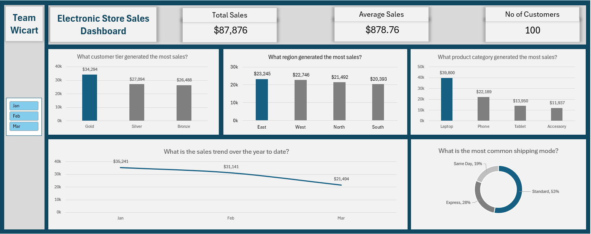
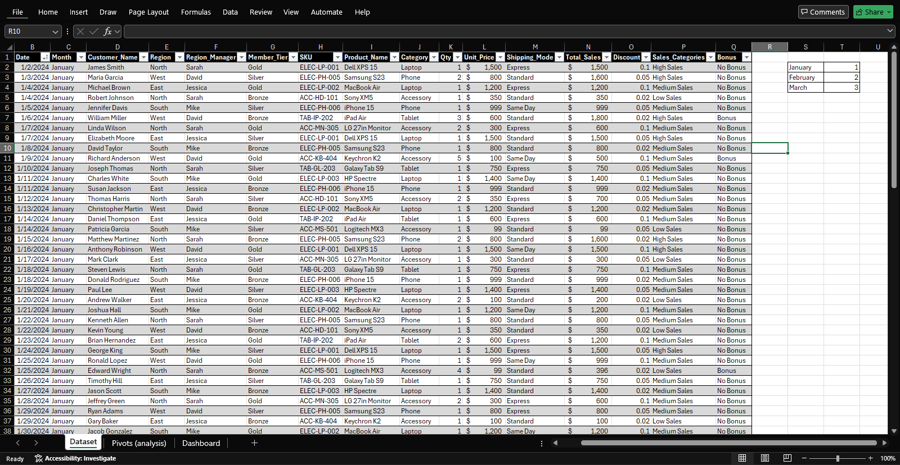
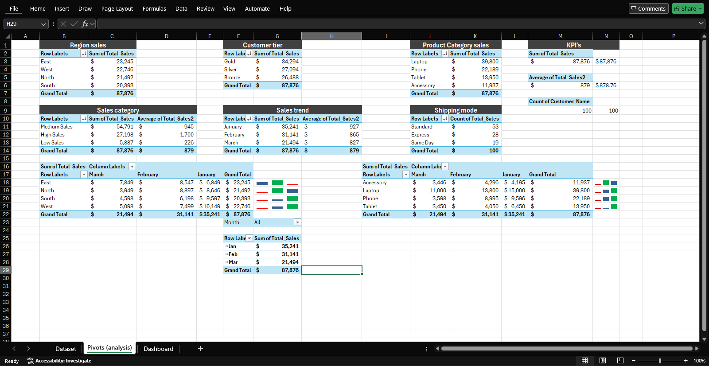

The capstone project of a 5-week data analytics virtual internship with LearnwithWiDa, highlighting my progression from foundational Excel functions to dynamic business intelligence reporting.
As the culmination of a 5-week virtual internship with LearnwithWiDa, I was tasked with analyzing a synthetic dataset of 100 distinct electronics store transactions. The objective was to identify key sales trends, evaluate regional performance, and understand customer behaviors to answer critical business questions.
Using Microsoft Excel exclusively, I aggregated the raw data using extensive Pivot Tables to summarize complex metrics across regions and member tiers. I then built a user-friendly Excel dashboard integrating KPIs and charts. While the final presentation was a collaborative effort with "Team Wicart", the technical workbook execution and dashboard design present were my personal take on the task. (Note: The foundational weekly exercises leading up to this capstone can be viewed in the full GitHub repository).

The final Week 5 Capstone Excel Dashboard visualizing sales performance, customer loyalty tiers, and logistical trends.
(Click image to view full size)
Raw Synthetic Dataset → Data Cleaning & Formatting → Pivot Table Aggregation → Interactive Excel Dashboard.
Raw Data → Cleaning → Pivot Tables → Dashboard
Here's a glimpse into the technical work that powers this project:

Raw Synthetic Dataset

Pivot Table Aggregation
Here's what we achieved and learned:
Gold Tier Sales
Laptop Revenue
East Region Sales
Standard Shipping